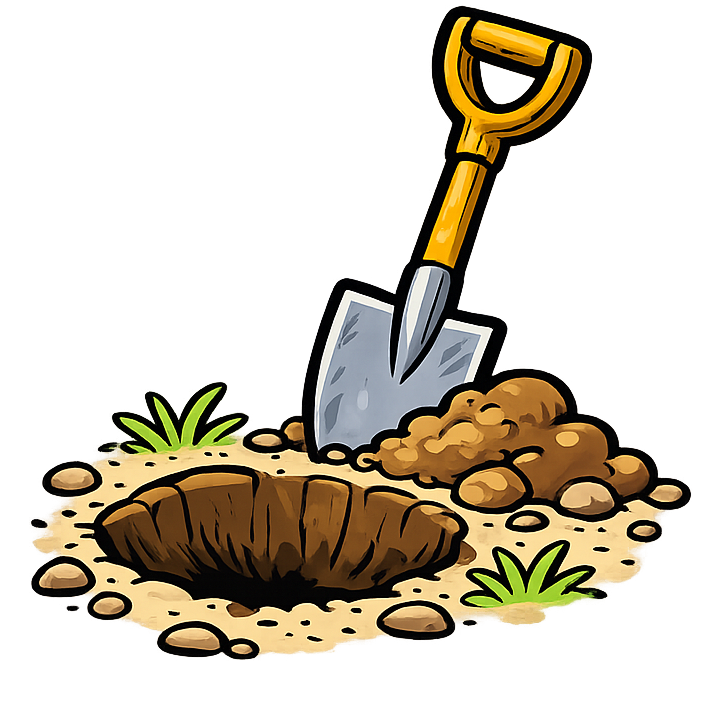

Bien que les schtroumpfs n'aiment pas creuser des trous, ceci est un élément indispensable de beaucoup de chantiers. Avec les trous maîtrisés, on peut construire le petit pont à travers des courants d'eau pas trop larges.
La construction d'un petit pont coûte: